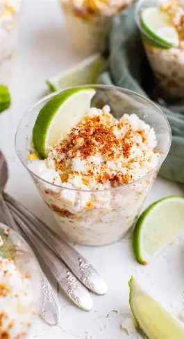

Esquites

Ingredientes
- 4 tazas de granos de elote
- 2 cucharadas de mantequilla
- 3 ramas de epazote
- Mayonesa al gusto
- Queso cotija rallado
- Chile piquín en polvo
- Limones
- Sal al gusto
- 1 chile serrano picado (opcional)
- Crema ácida (opcional)
- Chamoy o Valentina (opcional)
Preparación
1. Hierve los granos de elote en agua con sal y epazote por 10 minutos.
2. Escurre el elote y sofríe en mantequilla por 3 minutos.
3. Sirve en vasitos individuales mientras estén calientes.
4. Agrega mayonesa, queso cotija y chile piquín al gusto.
5. Exprime limón encima y disfruta con una cuchara.
Tiempo: 20 minutos
Porciones: 4 personas